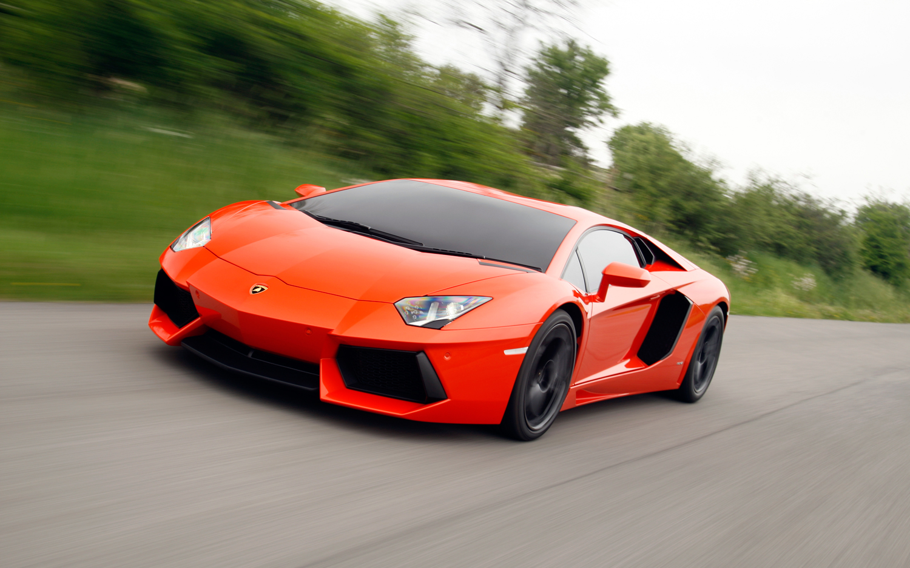
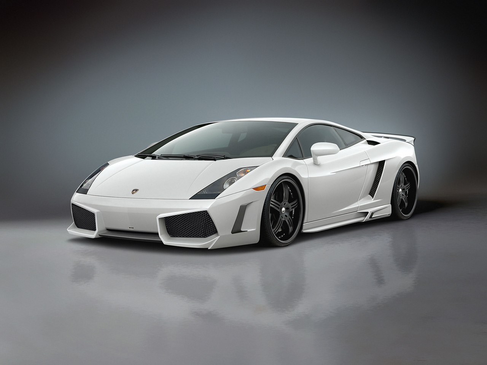
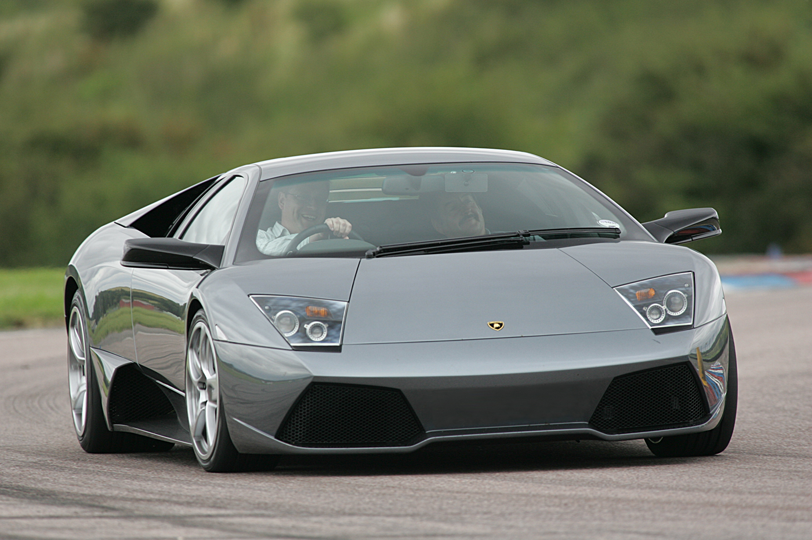
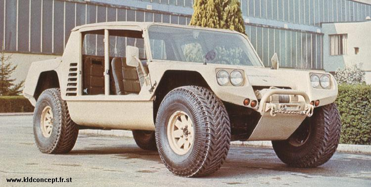

Lamborghini

Automobili Lamborghini Holding S.p.A. comunmente conocido como Lamborghini es un fabricante italiano de automoviles deportivos fundado en 1963 por el fabricante de tractores Ferruccio Lamborghini (1916-1993). La empresa original se llamaba Automobili Ferruccio Lamborghini SpA, que derivaba a su vez de la Lamborghini Trattori S.A.. Desde los primeros coupes deportivos hasta los actuales, los Lamborghini siempre se han destacado por sus prestaciones y sus modelos exoticos.
Vamos a analizar diferentes modelos de Lamborghini con sus cualidades: Aventator, Gallardo, Murcielago y Cheetah.
Lamborghini Aventator-> Es un automóvil superdeportivo de dos puertas y dos plazas. El Aventador monta un V12 y su velocidad máxima es de 350 km/h. Acelera de 0 a 100 km/h en solo 2.9 segundos. El precio ronda los 250.000€.

Lamborghini Gallardo-> Tiene un motor de diez cilindros en V10, con 5.0 litros de cilindrada y 500 CV de potencia a 7800 rpm, que le hacía alcanzar los 315 km/h. Acelera de 0 a 100 km/h en 3,7 segundos. El precio ronda los 220.000€.

Lamborghini Murcielago-> Es un dos plazas disponible con carrocerías cupé y descapotable de dos puertas y dichas puertas son del tipo de tijera. El motor del Murciélago es un 12 cilindros de 6.192 cc, que alcanza los 580 CV. Es capaz de llegar a los 333 km/h de velocidad máxima y acelerar de 0 a 100 km/h en 3,7 s. El precio ronda los 270.000€

Lamborghini Cheetah-> El Lamborghini Cheetah fue un prototipo de vehículo todoterreno construido en 1977. Fue el primer intento de vehículo todoterreno de Lamborghini. gran motor Chrysler V8 de 5,9 L (5898 cc) impermeabilizado, con 183 CV de potencia y montado en la parte trasera. El Cheetah podía acelerar de 0 a 100 km/h en 9,0 segundos y su velocidad máxima era de 167 km/h.
